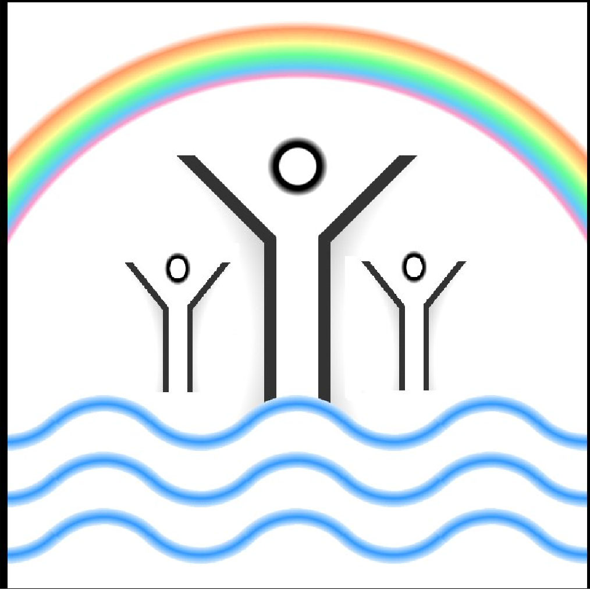

About Us:
Welcome to Milton Christian Fellowship! We are delighted to have you with us. We are a lively community of Christians working to advance Christ's Kingdom in Weston-super-Mare. Our church is a warm and inviting community where everyone is welcome. Explore a vast collection of Christian songs, stay updated with the latest news, and more!
Services and Events:
Sunday Services: 10:30AM and 6PM available both in Church and on Zoom.Prayer Meetings: Tuesday and Thursday, also available in Church and on Zoom.
(All meetings are 1.5hr long)

Featured Song of the Week:
(MP217) He is Exalted Author: Twila Paris Made in 1985 by StraightWay Music and Mountain Spring MusicMinistries We Support:
Release International:Founded in 1968, Release International is a UK-based Christian ministry, supporting believers around the world
who are persecuted for Christ and the gospel.
Living Waters Village:
Set in the heart of the West Kalimantan Jungle, Living Waters Village has grown to be a home for over 700 Dayak children.
Living Waters Village is truly a Miracle Zone.
